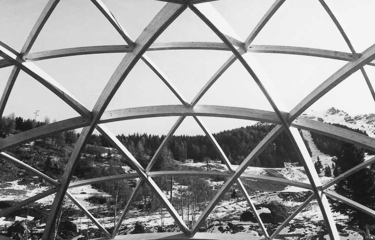
Notre Histoire
Depuis 1968...
Une histoire construite autour du ski alpin, de la formation, de la compétition et de la convivialité.
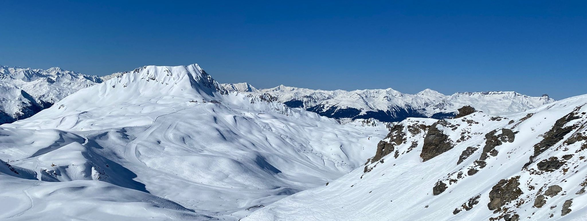
Créé à la fin des années 1960, le Ski Club Les Arcs accompagne plusieurs générations de skieurs alpins, du loisir à la compétition.

Depuis 1968...
Une histoire construite autour du ski alpin, de la formation, de la compétition et de la convivialité.
12 membres pour...
Développer le Ski Club Les Arcs, être au service de ses adhérents et transmettre nos valeurs.
plus d'infos →
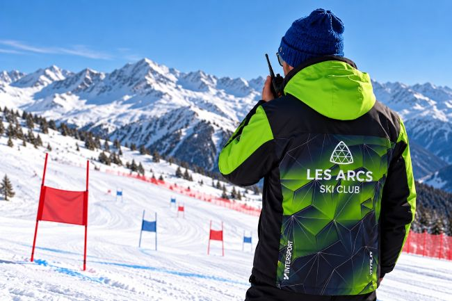
10 entraîneurs pour...
Former des skieurs autonomes, développer la performance et accompagner les jeunes dans leur parcours sportif.
plus d'infos →
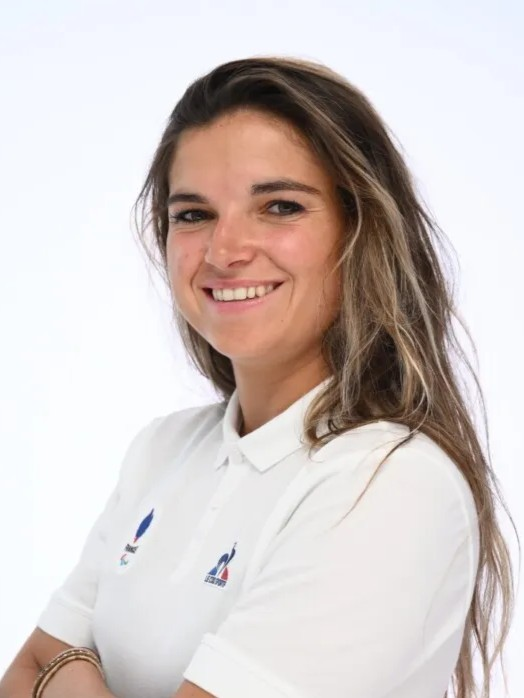
Présidente
FFS:
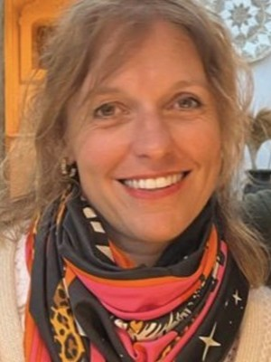
Secrétaire
FFS:
Trésorier
FFS:
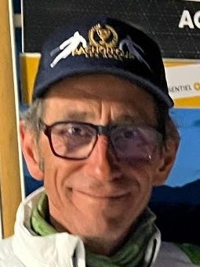
Vice-président
FFS:
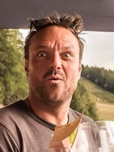
FFS:
FFS:

FFS:
FFS:

FFS:
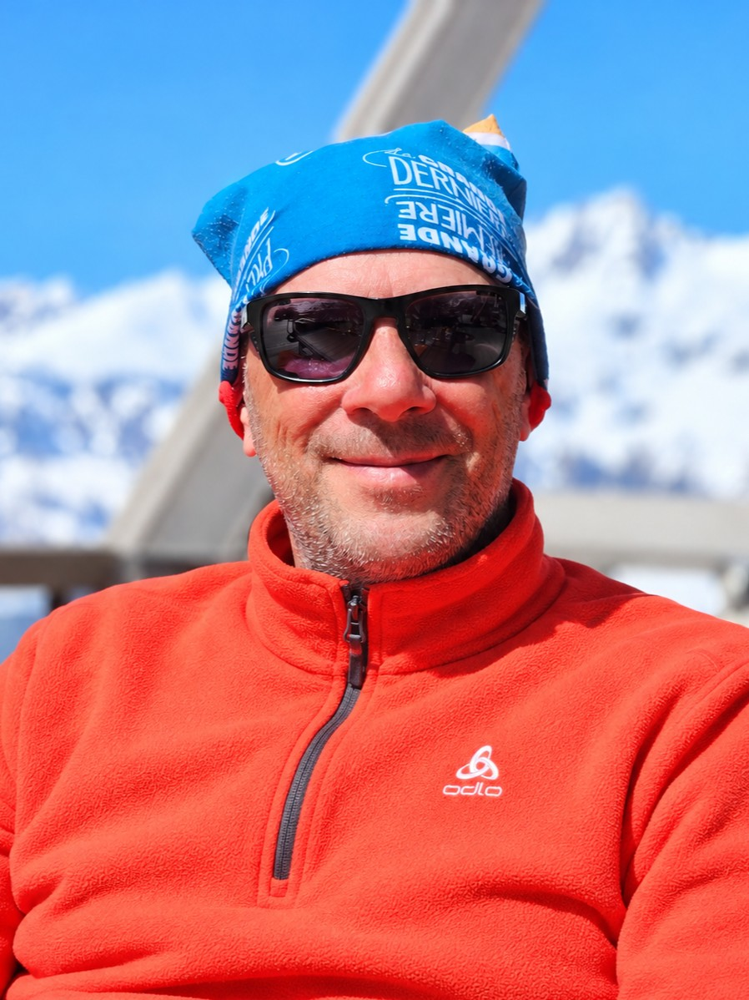
FFS: 2868840

FFS:

FFS:
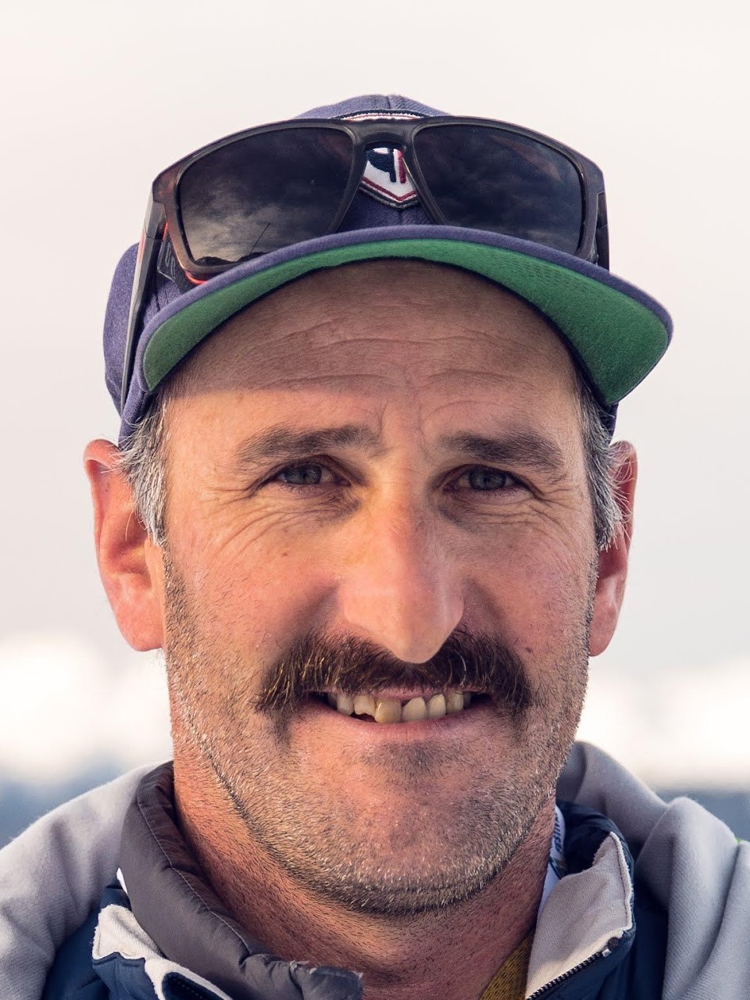
Groupe FIS
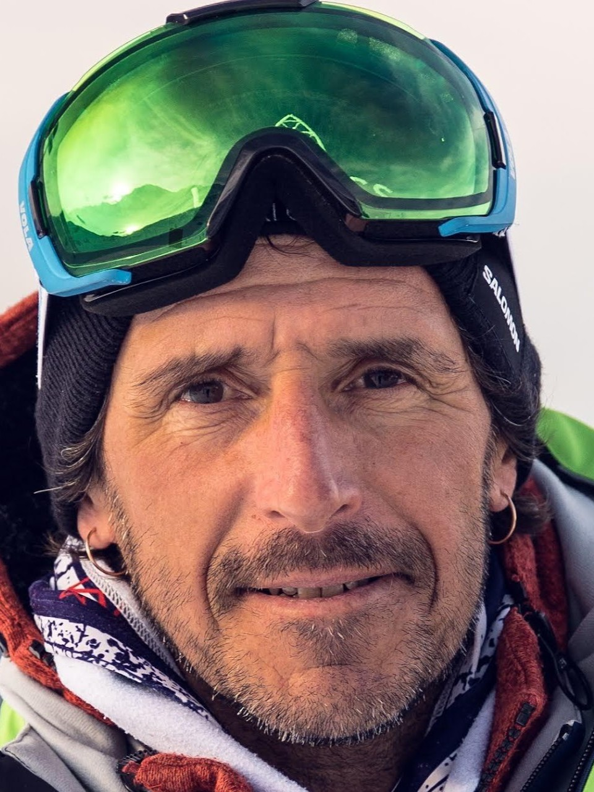
Renfort Groupe U12 et Coordination

Groupe U8 et Renfort Groupe U10

Groupe GP

Groupe U10 et Coordination
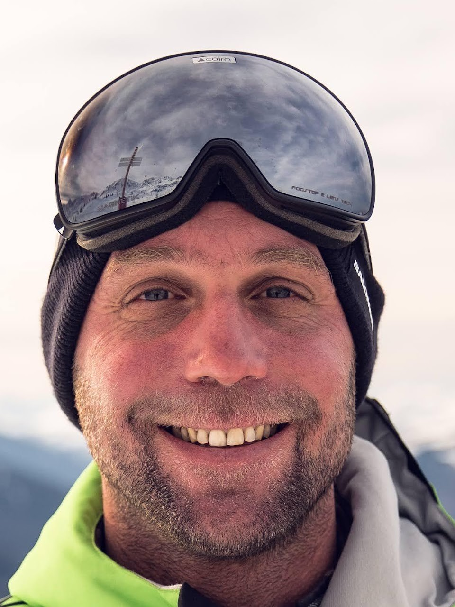
Groupe U14 Ski étude
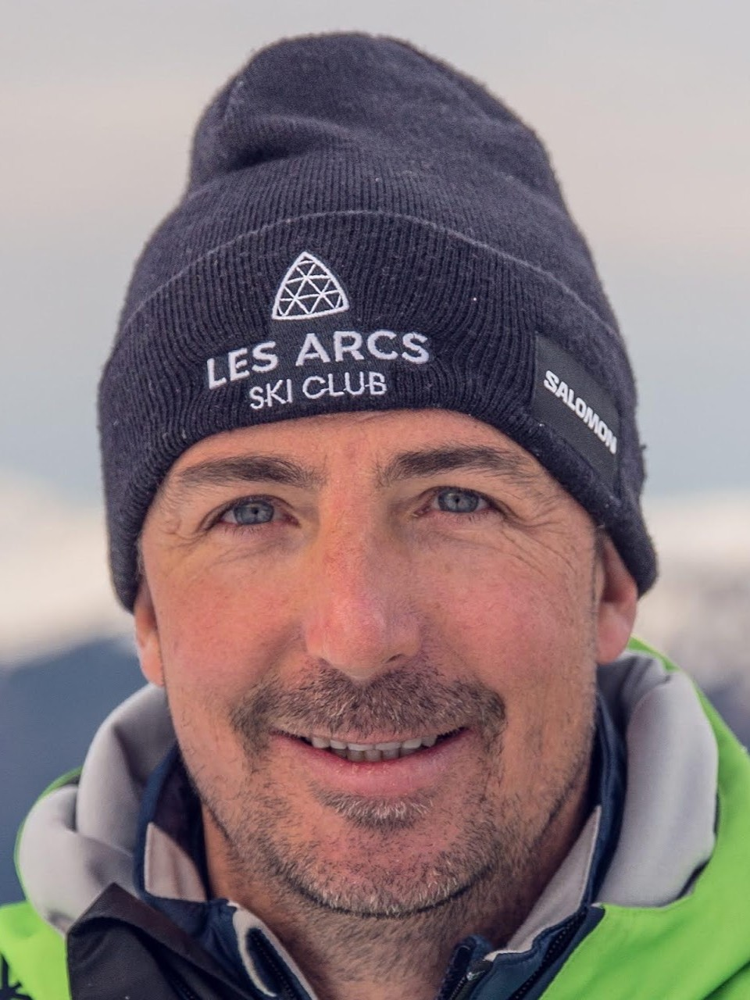
Groupe U12

Groupe GP

Groupe U16

Groupe U14 B
Il exécute les décisions prises. Il est en charge du bon déploiement des projets, et gère l’association au quotidien. Il est constitué par :
Le Bureau du Ski Club les Arcs est composé d’un Président, de deux Vice-Présidents, d’un Secrétaire et d’un Trésorier. Le Comité Directeur est une émanation du Conseil d’Administration. Il est chargé de l’exécution des décisions prises lors de l’assemblée générale. Le Président et les Vice-Présidents représentent l’association. Ils dirigent et contrôlent ses activités et sont responsables juridiquement des actions qu’elle met en œuvre. Le Trésorier a la responsabilité de la gestion et des finances de l’association (cotisations, factures, collecte de dons, établissement des budgets, préparation des dossiers de subvention, placement des excédents, etc…..
2. L’assemblée généraleConstituée de tous les membres/adhérents de l’association à jour de leur cotisation. Elle est réunie au moins une fois par an pour valider les comptes de l’association, les décisions proposées par les dirigeants, fixer le prix des adhésions, valider le budget prévisionnel, décider des grandes orientations du projet associatif.
3. Le conseil d’administrationIl est constitué de différents membres de l’association, qui ont un rôle plutôt décisionnels, appelés Administrateurs. Généralement, son rôle se limite à la gestion de l’association au quotidien. Cependant, les statuts peuvent prévoir des attributions spécifiques. Il lui revient entre autre de :